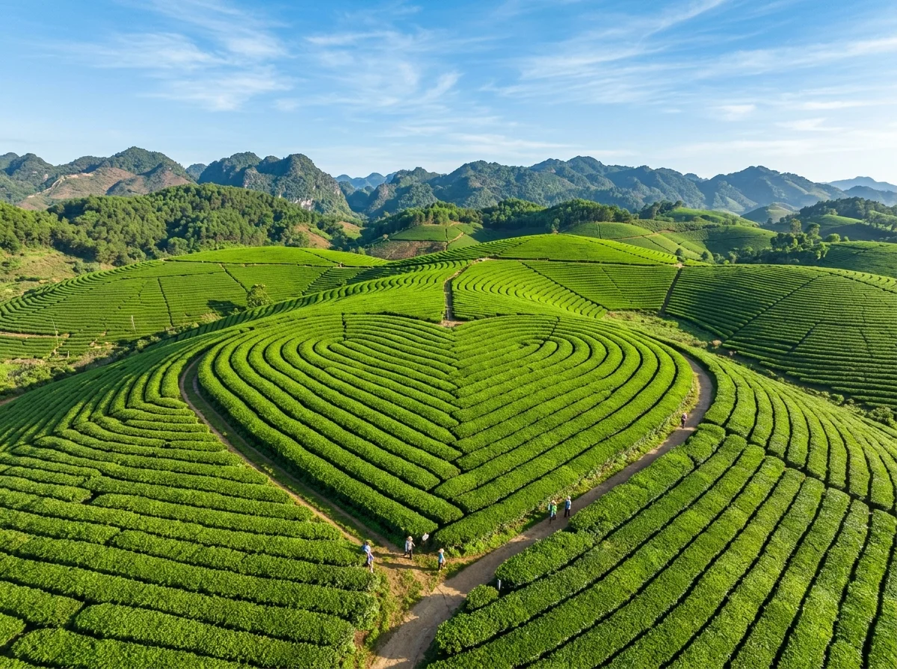
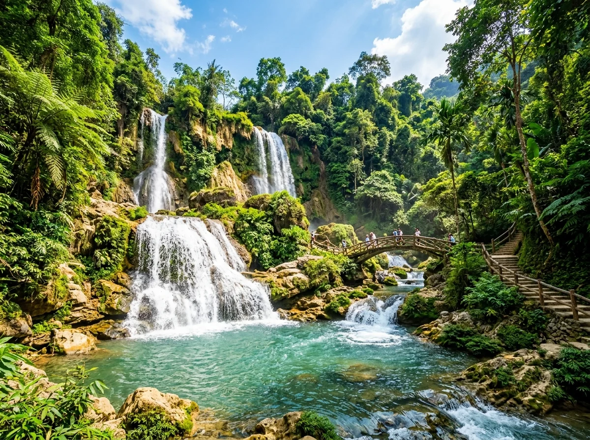
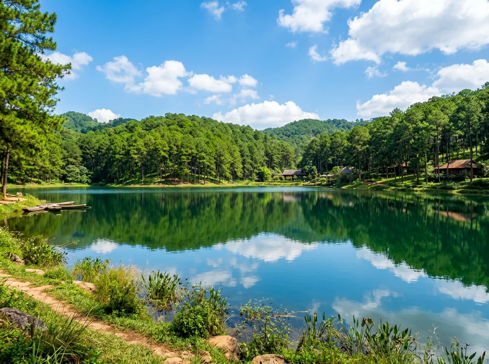
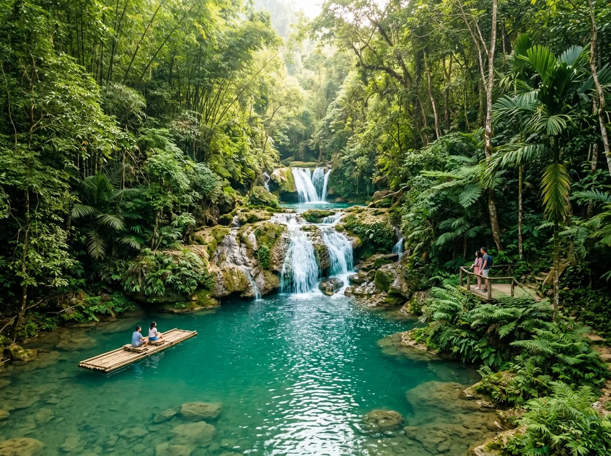

🌿 1. Cao Nguyên Bốn Mùa Hoa Của Tây Bắc
Nằm ở cửa ngõ vùng Tây Bắc hùng vĩ, Mộc Châu sở hữu địa hình thảo nguyên karst bằng phẳng hiếm có, được thiên nhiên ban tặng nền khí hậu á nhiệt đới trong lành, mát mẻ quanh năm. Không chỉ là vùng chuyên canh chè và thủ phủ chăn nuôi bò sữa nức tiếng hơn 60 năm qua, Mộc Châu còn là thiên đường du lịch "mùa nào thức nấy".
Mỗi độ đông về sang xuân, cao nguyên lại thay áo mới: tháng 11 rực rỡ sắc trắng tinh khôi của hoa cải và vàng ruộm hoa dã quỳ; tháng 12 đến tháng 2 là mùa hoa mận, hoa mơ nở trắng xóa khắp các thung lũng Nà Ka, Mu Náu như tuyết phủ; sang hè là mùa trĩu quả của những vườn mận hậu bạt ngàn. Với cung đường Quốc lộ 6 thuận tiện, Mộc Châu là điểm đến nghỉ dưỡng cuối tuần hoàn hảo cho mọi lứa tuổi.
📸 2. 8 Tọa độ Thắng cảnh Biểu tượng & Dấu tích Lịch sử
(Nhấp vào từng hình ảnh để xem chi tiết ảnh chất lượng cao và câu chuyện truyền tích lịch sử chính thống)

Đồi chè Trái Tim (Tân Lập)
Những sóng chè xanh mướt uốn lượn hình trái tim kỳ công giữa thảo nguyên, biểu tượng sức sống và tình yêu của đất Mộc Châu.
Thung lũng mận Nà Ka
Xứ sở thần tiên mùa hoa mận trắng nở rộ tinh khôi phủ kín thung lũng dưới chân những nếp nhà gỗ mộc mạc.

Thác Dải Yếm (Thác Nàng)
Dòng thác 9 tầng nước đổ trắng xóa mềm mại như dải yếm thiếu nữ vắt qua núi đá giữa rừng nguyên sinh xanh thẳm.
Đỉnh Pha Luông (Ký Ức Tây Tiến)
Mỏm đá sống ảo kiêu hùng vươn mình ra biển mây cuồn cuộn trên độ cao 2.000m, nơi gắn liền trang sử hào hùng của đoàn binh Tây Tiến.
Cầu kính Bạch Long
Cầu kính đi bộ dài nhất thế giới 632m uốn lượn ngoạn mục qua vách đá và thung lũng sâu hun hút đầy thử thách.

Rừng thông Bản Áng
Hồ nước trong veo soi bóng hàng ngàn gốc thông mã vĩ xanh rì, điểm cắm trại và dạo chơi thư thái tuyệt đẹp.
Bản Pa Phách (Mùa Hoa Cải)
Thiên đường hoa cải trắng bạt ngàn trải dài khắp lối đi vào bản người H'Mông mộc mạc dưới chân núi đá kỳ vĩ.

Thác Nàng Tiên (Chiềng Khoa)
Quần thể thác nước 3 tầng ẩn giữa đại ngàn nguyên sinh với lòng hồ nước xanh ngọc bích như cõi bồng lai tiên cảnh.
🚗 3. Hướng Dẫn Di Chuyển & Cung Đường Đèo Thung Khe
1. Lộ trình từ Hà Nội lên Mộc Châu (~190km)
- Bằng ô tô cá nhân / Xe limousine (~4 tiếng): Tuyến đường thuận tiện nhất hiện nay. Đi theo Đại lộ Thăng Long → Cao tốc Hòa Lạc - Hòa Bình → Nhập vào Quốc lộ 6 đi qua Cao Phong, Tân Lạc, vượt qua đèo Thung Khe (đèo Đá Trắng) hùng vĩ để sang địa phận cao nguyên Mộc Châu.
- Bằng xe khách giường nằm: Đón xe từ Bến xe Mỹ Đình hoặc Yên Nghĩa với rất nhiều chuyến chạy liên tục trong ngày, giá vé khoảng 180.000 – 250.000 VNĐ/vé.
- Bằng xe máy cho dân phượt: Cung đường Quốc lộ 6 trải nhựa đẹp, có nhiều đoạn quanh co đèo dốc thú vị. Điểm dừng chân không thể bỏ qua là đỉnh đèo Thung Khe ngắm thung lũng Mai Châu bảng lảng trong sương sớm và thưởng thức ngô nướng, cơm lam chấm muối vừng.
2. Phương tiện dạo quanh cao nguyên Mộc Châu
- Thuê xe máy tại thị trấn (120.000 – 150.000 VNĐ/ngày): Các điểm tham quan ở Mộc Châu trải dài cách nhau 10 – 25km (như đồi chè Tân Lập, thung lũng Nà Ka, thác Nàng Tiên), xe máy là phương tiện cơ động nhất để luồn lách vào các thung lũng hoa và đường đất bản làng.
- Taxi / Thuê ô tô trọn gói: Phù hợp cho đoàn gia đình có người lớn tuổi và trẻ nhỏ, đường nhựa dẫn vào hầu hết các điểm chính như Rừng thông Bản Áng, Cầu kính Bạch Long, Thác Dải Yếm đều rất thông thoáng.
💡 Gợi ý lịch trình 2 ngày 1 đêm hoàn hảo:
• Ngày 1: Hà Nội → Dừng chân đèo Thung Khe → Thác Dải Yếm & Cầu kính Bạch Long → Chiều hoàng hôn dạo Rừng thông Bản Áng → Tối thưởng thức Bê chao Mộc Châu.
• Ngày 2: Đón bình minh Đồi chè Trái Tim → Ngắm mùa hoa thung lũng mận Nà Ka hoặc Bản Pa Phách → Trưa ghé Thác Nàng Tiên Chiềng Khoa tắm mát → Chiều thong dong về lại Hà Nội.
🎫 4. Bảng Giá Vé Tham Quan Thắng Cảnh Mộc Châu
Mức giá vé niêm yết chính thức tại các ban quản lý khu du lịch và danh thắng (cập nhật mới nhất):
| Điểm tham quan | Chi phí tham khảo | Ghi chú & Trải nghiệm |
|---|---|---|
| Đồi chè Trái Tim (Tân Lập / Mộc Sương) | Miễn phí vào cổng | Tự do chụp ảnh (thuê trang phục dân tộc: 30k – 50k) |
| Khu du lịch Thác Dải Yếm | Vé niêm yết tại quầy | Vé vào thác (vé cầu kính tình yêu tính riêng) |
| Cầu kính Bạch Long (Mộc Châu Island) | Vé niêm yết tại quầy | Bao gồm trọn gói trải nghiệm cầu kính Guinness |
| Rừng thông Bản Áng | Vé niêm yết tại quầy | Bao gồm vé vào cổng tham quan hồ và rừng thông |
| Thung lũng mận Nà Ka / Vườn mận Mu Náu | 20.000 – 30.000 VNĐ | Phí chăm sóc vườn do nhà vườn thu (được ăn mận tại vườn) |
| Thác Nàng Tiên (Chiềng Khoa) | Vé niêm yết tại quầy | Đi bè mảng chụp ảnh hồ ngọc bích (~10k – 20k/lượt) |
🍲 5. Lưu Trú & Tinh Hoa Ẩm Thực Thảo Nguyên
1. Gợi ý điểm lưu trú tại Mộc Châu
- Homestay nhà sàn quanh Rừng thông Bản Áng: Không gian xanh mát rợp bóng cây, nhà sàn gỗ ấm cúng mang phong cách Thái - H'Mông, giá từ 300.000 – 600.000 VNĐ/phòng.
- Khách sạn & Resort cao cấp: Mộc Châu Island Resort, Thảo Nguyên Resort, Mường Thanh Luxury Mộc Châu tiện nghi sang trọng và có hồ bơi nước ấm mùa đông.
- Glamping & Homestay giữa đồi chè: Trải nghiệm ngủ lều sang chảnh thức giấc giữa biển sương sớm và đồi chè thơm mát.
2. Tinh hoa ẩm thực cao nguyên Mộc Châu
🗓️ 6. Lịch Mùa Vàng & Mẹo Du Lịch Bản Địa
1. Lịch các mùa hoa đẹp nhất Mộc Châu
- Tháng 11 – Tháng 12 (Mùa Hoa Cải Trắng & Dã Quỳ): Thung lũng Pa Phách, Bản Áng ngập trong sắc trắng bạt ngàn của hoa cải, hai bên đèo dã quỳ nở vàng ấm áp.
- Tháng 1 – Tháng 2 (Mùa Hoa Mận, Hoa Đào Cổ Thụ): Mùa du lịch đỉnh cao nhất năm. Cả cao nguyên trắng tinh khôi như tuyết đầu mùa, thời tiết se lạnh tuyệt đẹp.
- Tháng 3 – Tháng 4 (Mùa Hoa Ban Trắng): Hoa ban nở rộ trên các sườn núi đá vôi dọc Quốc lộ 6, mùa lễ hội Hết Chá của người Thái.
- Tháng 5 – Tháng 6 (Mùa Thu Hoạch Mận Hậu): Trải nghiệm vào vườn tự tay hái những chùm mận hậu chín tím thẫm phủ phấn trắng giòn ngọt.
⚠️ Lưu ý quan trọng khi du lịch Mộc Châu:
• Đêm vùng cao nhiệt độ hạ rất nhanh: Dù ban ngày có nắng ấm, ban đêm nhiệt độ có thể xuống 10 – 14°C, hãy luôn chuẩn bị áo khoác dày và khăn quàng ấm.
• Tôn trọng hoa và vườn cây: Khi vào chụp ảnh tại các đồi chè và thung lũng mận của bà con, hãy xin phép chủ vườn, tuyệt đối không bẻ cành bứt hoa hay giẫm lên luống rau.
• Cuối tuần mùa hoa mận rất đông: Nên chủ động đặt phòng homestay hoặc khách sạn trước ít nhất 1 – 2 tuần để tránh tình trạng cháy phòng.